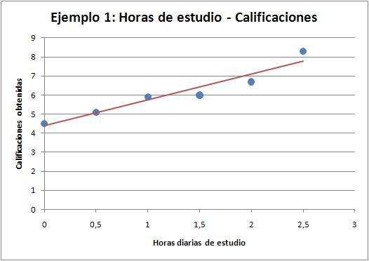
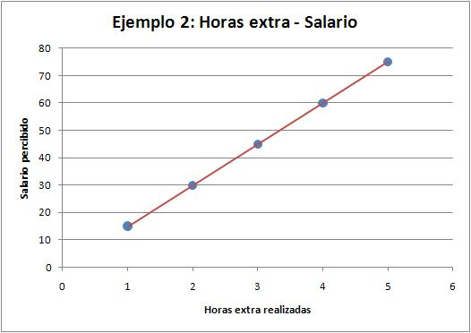
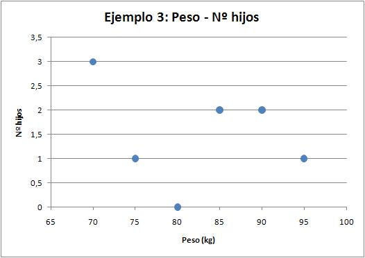
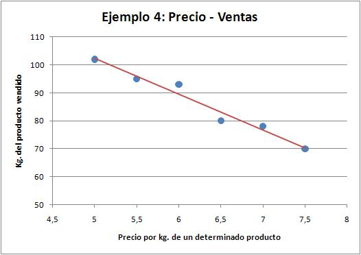

2.3 Dependencia. Tipos
Dependencia
El objetivo de un estudio bidimensional es estudiar la relación entre dos variables, es decir, el grado de dependencia entre ambas. Las Nubes de Puntos nos ayudan a ver la dependencia entre las variables.
- Dependencia positiva: Al aumentar la variable X, también aumenta la Y.
- Dependencia negativa: Al aumentar la variable X, disminuye la Y.
- Sin dependencia: No se observa ninguna relación entre las dos variables.
- Dependencia funcional: Podemos encontrar una relación exacta entre ambas variables que siempre se cumple. Por ejemplo, si estudias la relación entre el número de cajas de leche y el número de litros que se compra de una marca, tenemos una dependencia funcional, porque cada caja tiene siempre el mismo número de litros. Puede ser más o menos fuerte dependiendo de que el diagrama de dispersión tienda a acercarse más o menos a la representación de la función. Nos interesará conocer si es positiva o negativa, así como si es lineal o curvilínea.
- Dependencia aleatoria: No hay una regla exacta que determine la relación entre ambas variables, como en el ejemplo anterior.
Mira las siguientes gráficas correspondientes a diferentes ejemplos. Verás que es mucho más fácil ver así la dependencia:
|  |  |
| Dependencia positiva aleatoria | Dependencia positiva funcional |
|  |  |
| Sin dependencia | Dependencia negativa aleatoria |
En la siguiente tema podrás ver un ejemplo muy completo sobre los tipos de dependencia y cómo estudiarlos con más profundidad.